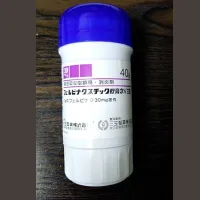
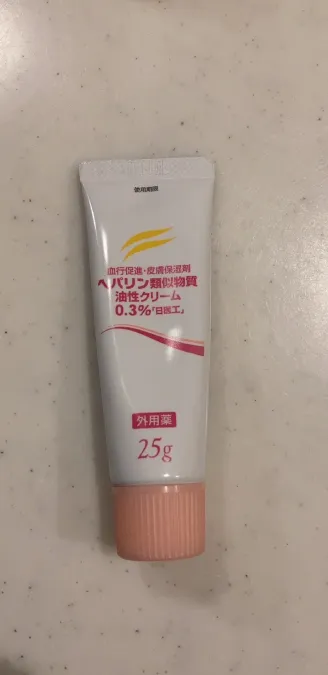
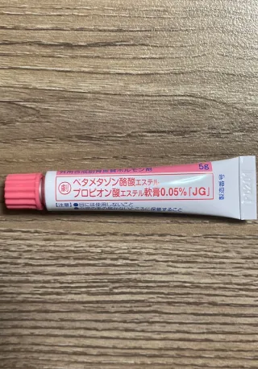
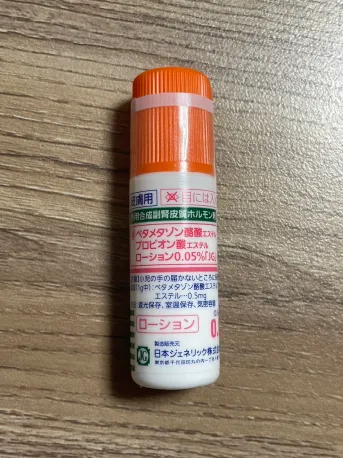
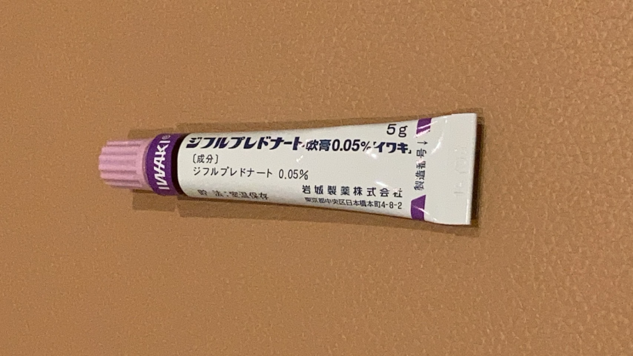
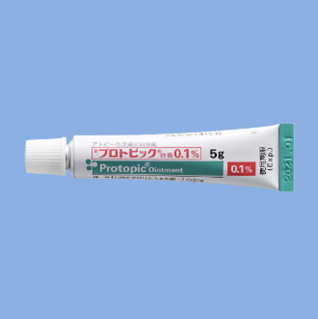

私たちのSLE
笑って生きていくために一緒に考えよう
外用薬
期待とともに

外用薬
経皮吸収型鎮痛・消炎剤
フェルビナクスチック軟膏
抗炎症薬（NSAIDs）の一種です。主成分としてフェルビナクスという成分が含まれています。-6の働きを抑制することで、炎症を緩和する作用があります。
フェルビナクスチック軟膏の効用
- 抗炎症作用：フェルビナクスが炎症を抑える働きがあります。関節炎や腱鞘炎、捻挫などの痛みや腫れを軽減します。
- 鎮痛作用：フェルビナクスが痛みを和らげる働きがあります。筋肉痛や腰痛、肩こりなどの症状を緩和します。
- 筋弛緩作用：フェルビナクスが筋肉を弛緩させる働きがあります。筋肉のこわばりや痙攣を和らげます。
- 血行促進作用：フェルビナクスが血行を促進することで、炎症部位の代謝を活性化し、治癒を促進します。
フェルビナクスチック軟膏は、関節炎や腱鞘炎、捻挫、打撲、筋肉痛、腰痛、肩こり、頚部痛などの症状を和らげるために用いられます。しかし、副作用として、かぶれや発疹、かゆみ、かぜ症状などが現れる場合があります。

保湿剤
ヒルドイド （後発品：ヘパリン類似物質）
- 保湿作用：尿素が皮膚の角質層に浸透し、水分を保持することで、皮膚をしっとりと保ちます。
- 抗炎症作用：ヘパリンが炎症を抑える働きがあります。皮膚炎やかゆみなどの症状を軽減します。
- 瘢痕治療作用：ヒルドイドは、傷跡やあざなどの瘢痕を改善することができます。瘢痕の赤みや硬さを軽減する効果があります。
- 血行促進作用：ヘパリンが血行を促進し、皮膚の代謝を活性化することで、皮膚の健康を維持します。
- 角質柔軟化作用：尿素が角質層を柔軟化することで、角質の厚さを薄くし、皮膚の透明感を高めます
保湿剤を使うことで皮膚を保湿し、かゆみを軽減することができます。また、皮膚が乾燥していると、痒みによって掻いてしまい、皮膚が傷ついて感染症を引き起こすリスクが高まります。保湿剤を使うことで、皮膚を健康に保ち、感染症のリスクを軽減することができます。
さらに、SLEによる皮疹には、紫外線によって悪化することがあります。保湿剤には紫外線吸収剤が含まれているものがあり、このような保湿剤を使うことで、皮膚を紫外線から守ることができます。


外用のステロイド
アンテベート（後発：ベタメタゾン酪酸エステルプロピオン酸エステル）
抗炎症作用を有するステロイド外用剤で、皮膚の赤みや腫れ、かゆみなどの症状を改善するために使用されます。 ステロイド外用薬は強さにより5段階に分類されますが、アンテベートの強さは上から2番目のベリーストロングクラスです。



マイザー
（後発：ジフルプレドナート）
合成副腎皮質ステロイドで、血管収縮作用、抗炎症作用などにより、皮膚の炎症症状を緩和します。 通常、湿疹・皮膚炎群、痒疹群、虫さされ、薬疹・中毒疹、円形脱毛症、ケロイドなど広範囲の皮膚疾患の治療に用いられます。

ステロイド外用薬の上手な付き合い方
- 優しく塗る：薬をすり込まず、優しく伸ばして塗りましょう
- 適量を塗る：1FTUを基本に塗るようにしましょう（1FTUとは人差し指の第一関節まで薬を押し出した量0.5mg）
- 長時間使用しない：5〜6日間使用しても良くならない時は再度病院に受診してください。
- 通常は一日1〜2回の塗布：よくなってきたら回数を減らすかノンステロイドタイプの皮膚用薬に変えましょう
- 可能している患部には：抗生物質の入った皮膚用薬を使いましょう
ステロイド外用薬の強さ
外用のステロイド剤には、使用する部位や炎症の程度に応じて様々な強さのものがあります。一般的には、ステロイドの強さを表すポテンシーと呼ばれる指標によって、ランク付けされることがあります。以下は、ポテンシーによってランク付けされた外用ステロイド剤の例です。
|
strongest (最も強い) | デルモベート、ジフラール |
|
very strong (とても強い) | フルメタ、アンテベート、トプシム、リンデロンDP、マイザー、ビスダーム |
|
強い （strong） | メサデルム、ボアラ、ベトネート、プロパデルム、フルコート、リドメックス |
|
普通 （medium） | レダコート、キンダベート、ロコイド、アルメタ |
|
弱い （weak） | コルテス、プレドニゾロン |
ステロイド外用薬の吸収率は
腕を1とした場合
頭皮は3.5
手のひらは0.8
足の裏は0.1
頬は13
陰部は42
と、主に皮膚の厚さによって異なる
外用薬のステロイドの副作用
- 皮膚の萎縮や色素沈着：ステロイドを長期間使用すると、皮膚が薄くなり、色素沈着が起こることがあります。特に、顔や陰部などの皮膚が薄く、敏感な部位に使用する場合には注意が必要です。
- 乾燥や痒み：ステロイドを使用すると、皮膚の油分が減少し、乾燥や痒みが生じることがあります。この場合には、保湿剤の使用が有効です。
- 毛細血管拡張や毛細血管浮腫：皮膚の血管が拡張することで、赤みが生じたり、皮膚が浮腫むことがあります。
- 皮膚感染症：ステロイド使用によって、皮膚のバリア機能が低下し、感染症を引き起こすリスクが増加することがあります。
- ステロイド離脱症候群：ステロイドを長期間使用していると、突然ステロイドを中止すると、離脱症状が現れることがあります。離脱症状には、頭痛、倦怠感、筋肉痛、関節痛、吐き気、発熱などが含まれます。
その他
プロスタンディン
褥瘡（床ずれ）、潰瘍ができている部分の血流を改善し、肉芽形成および表皮形成を促進します。

プロトピック
プロトピックは、主成分としてタクロリムスを含む外用薬で、炎症性皮膚疾患の治療に用いられます。プロトピックは、以下のような効果があります。
抗炎症作用：タクロリムスが炎症を抑える働きがあります。アトピー性皮膚炎や接触性皮膚炎などの症状を軽減します。
免疫抑制作用：タクロリムスが免疫系を抑制する働きがあります。自己免疫疾患の治療にも使用されます。

外用薬には、医師の指示に従うことが非常に重要です。